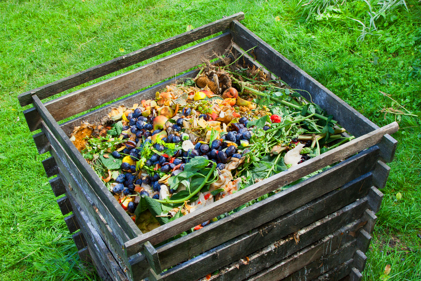

ECOMPOST
Nutre la Tierra, Nutre el Futuro
Bienvenido a ECOMPOST
Transformamos residuos orgánicos en compost ecológico de alta calidad, promoviendo la sostenibilidad y cuidando el medio ambiente.
Nuestros Valores

Sostenibilidad
Trabajamos para reducir los residuos y proteger el medio ambiente.
Calidad
Proporcionamos compost de la más alta calidad para tus cultivos.

Comunidad
Apoyamos a las comunidades agrícolas y fomentamos la cooperación.
Lo Que Dicen Nuestros Clientes
"Gracias a ECOMPOST, nuestro huerto ha mejorado su producción y es más ecológico."
- María López, Agricultora
"Un excelente servicio y productos de calidad que realmente hacen la diferencia."
- Juan Martínez, Productor Orgánico